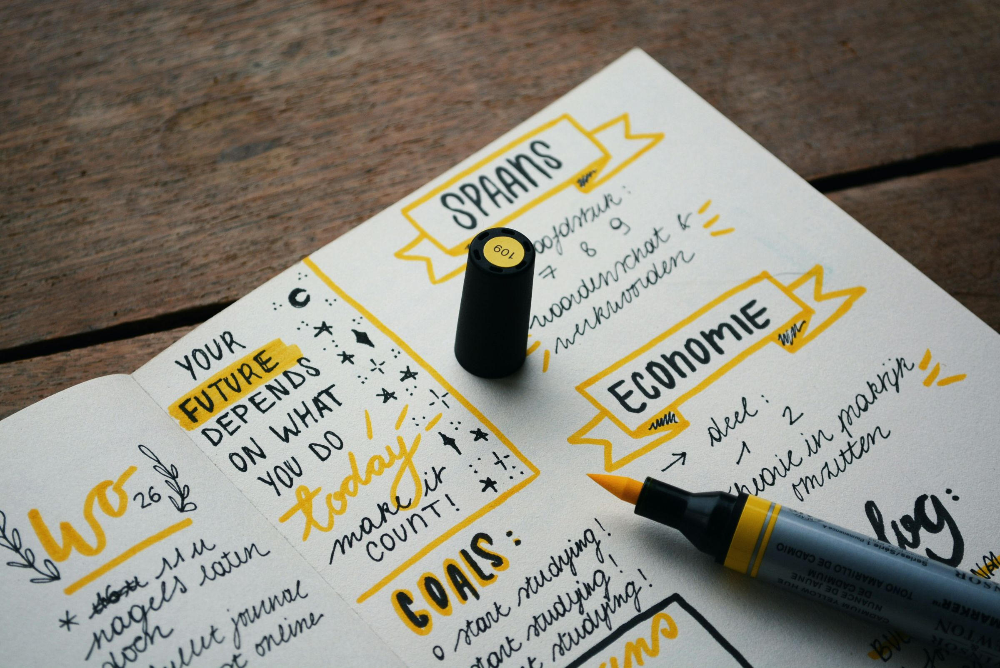
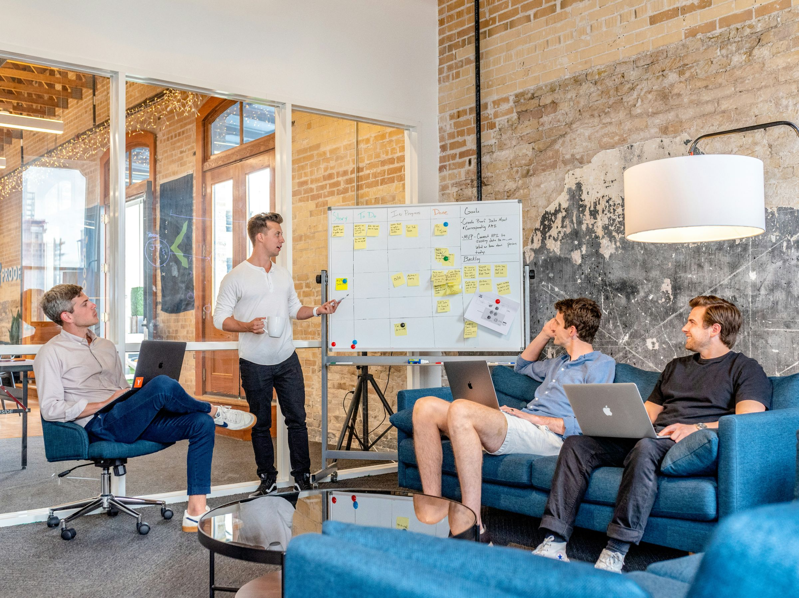

福利厚生の進化：従業員の幸福を追求するビジネスの新たな道
令和で求められる福利厚生とは？
令和時代における福利厚生は、従来の概念を超えて、より幅広いニーズに対応する必要があります。
従業員が健康で充実した生活を送り、仕事とプライベートのバランスを保つことが求められています。そのため、給与や保険だけでなく、柔軟な働き方やメンタルヘルスのサポート、キャリア開発プログラムなど、個々の従業員のニーズに合わせた福利厚生が重要視されています。
また、デジタル技術の進化に伴い、リモートワークやオンライン研修など、新たな働き方や学び方をサポートする施策も注目されています。BizLifeでは、こうした新しい時代に求められる福利厚生を提供し、従業員の幸福と企業の成長を支援しています。

これまでの福利厚生では補ていなかった部分
従来の福利厚生は、主に給与や健康保険、退職制度などの基本的なニーズに焦点を当ててきました。
しかし、近年の社会状況の変化や労働者のニーズの多様化により、これらの伝統的な福利厚生だけでは満足できない場面が増えています。例えば、メンタルヘルスの問題やワークライフバランスの課題は、従来の制度では十分にカバーできない場合があります。
従業員にとって重要な要素
また、柔軟な働き方やキャリア開発の機会も、従業員にとって重要な要素となっています。このような点から、新しい福利厚生の形態が求められています。
BizLifeでは、従業員のメンタルヘルスを支援するプログラムや、柔軟な働き方を実現するための制度、キャリア開発支援など、これまでの福利厚生では補いきれなかった部分に焦点を当ててサービスを展開しています。
社員が求める会社像
現代の従業員は、給与や福利厚生だけでなく、会社の文化や価値観にも注目しています。
彼らは、働く環境が自身のニーズや価値観に合致しているかどうかを重視し、それが自己実現や働きがいにつながると考えています。
したがって、従業員が求める会社像とは、働きやすい環境やチームワーク、自己成長の機会を提供する企業であり、従業員の声を尊重し、多様性や包括性を尊重する組織です。
また、企業の社会的責任や環境への取り組みにも注目が集まっています。
BizLifeでは、従業員が自己実現や成長を達成できる環境を提供し、社会貢献活動や環境保護にも積極的に取り組むことで、社員が求める理想の会社像を実現しています。

BizLifeで実現できること
BizLifeでは、従業員の幸福と健康を最優先に考え、革新的な福利厚生サービスを提供しています。
その中でも特に注目すべき点は、従業員のメンタルヘルスを支援するプログラムです。近年、メンタルヘルスの重要性が高まっており、ストレスや精神的な負担が増加しています。
BizLifeでは、定期的なデジタルデトックスやストレス管理プログラムを通じて、従業員が心身の健康を維持し、ストレスを軽減できるよう支援しています。
また、柔軟な働き方やキャリア開発の機会も充実しており、従業員が自己実現を追求し、成長できる環境を提供しています。
さらに、企業の社会的責任として、地域社会や環境への貢献活動にも積極的に取り組んでいます。従業員が安心して働き、生活の質を向上させるための多彩なサポートがBizLifeにはあります。